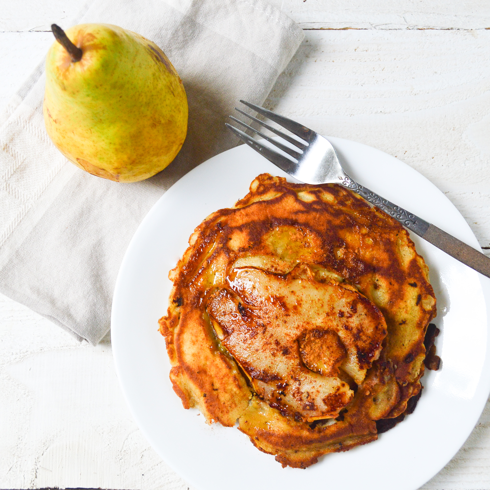

Pear Pancakes
Everyone loves pancakes, everyone loves fruits. This recipe combines these two into a healthy and filling breakfast that you can easily make in an hour or two. Considering autumn is here, we have chosen one of the most representative autumn fruits, pears! However, you can substitute them with any other fruit or fruits you wish.

Ingredients
- 100g basic flour
- 280g pears
- 2 medium eggs
- 160g sour cream
- 1 tbsp cinnamon
- 1 tbsp soudium bicarbonate
- 1 tbsp oil
Steps
- Cut the pears into small cubes
- Add all ingredients in a blender and mix
- Put the oil in a pan and wait for it to heat up
- Add the obtained composition and flip after 3-4 minutes. Make the pancakes as big as you wish!
- Remove the pancakes and add syrup, ice cream, fruits, or whatever you wish!
- Enjoy!